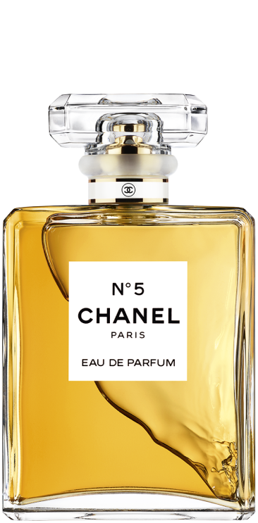

Global LifeStyle Creat
We're going to be together for every moment that shines
Coco
A woman who doesn’t wear
perfume has no future
Beauty is,
You're going to accept yourself
It starts when you
make up your mind
Chanel

N
O
.5
EAU DE
PARFUM
the essence of feminine beauty.
The perfume of the aldehyde floral bouquet is
We offer iconic bottles with a minimalist design.
It is a Chanel icon with a timeless history.
EAU DE
PARFUME
Since its creation in 1921,
N°5 has exuded the
very essence of femininity.
The abstract, mysterious scent—alive
with countless subtle
facets—radiates an
extravagant floral richness.
In 1986, Jacques Polge reinterpreted
his predecessor Ernest
Beaux’s composition
to create a fuller, more voluminous
version of the now and forever
fragrance: the Eau de Parfum.
GABRI
ELLE
EAU DE
PARFUM
A floral perfume containing sunlight created by
Chanel perfumer Olivier Porges.
Inspired by Gabriel Chanel,
what he wants It is a perfume
for women who know well and
express themselves freely.
ESSENCE
Composed by In-House Perfumer Creator Olivier Polge,
this deep and enveloping scent evokes the true essence of
Gabrielle Chanel. The fragrance is an imaginary bloom,
faceted with jasmine, ylang-ylang, orange blossom and
the most captivating flower of all: Grasse tuberose.
Solar and radiant with a warm trail,
it is the scent of a woman who follows her own path.